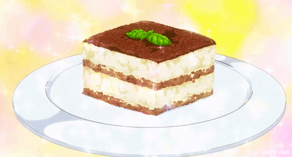

GO BACK
K-On-Adjacent Tiramisu Recipe
I've only had tiramisu once...at the Denny's-adjacent Japanese "Italian" restaurant chain Saizeriya

K-On is an early 2000s anime about the antics of amateur guitarist Yui Hirasawa and her friends in their high school's light music club. Yui, the club's self-professed dessert fiend and resident airhead, uses the time otherwise allocated towards practicing to instead eat a variety of desserts. Per the aforementioned airhead comment, in spite of Yui drinking an average of 16 gallons of tea every week, her favorite dessert is the Italian coffee dessert tiramisu. This recipe hopes to serve as a link between our world and that of the "Light Music Club."
Ingredients
- 6 large egg yolks
- ¾ cup white sugar
- ⅔ cup milk
- 1 ¼ cups heavy cream
- ½ teaspoon vanilla extract
- 1 pound mascarpone cheese, at room temperature
- ¼ cup strong brewed coffee, at room temperature
- 2 tablespoons rum
- 2 (3 ounce) packages ladyfinger cookies
- 1 tablespoon unsweetened cocoa powder
Directions
- Make the Filling: Cook the egg yolks, sugar, and milk until slightly thickened. Let cool slightly, then chill in the fridge for about an hour. When the filling has fully chilled, mix in mascarpone cheese.
- Make the Whipped Cream: Beat heavy cream with vanilla extract until stiff peaks form.
- Soak the Ladyfingers: Combine coffee and rum in a small bowl. Pour mixture over ladyfingers that have been split in half lengthwise.
- Assemble the Tiramisu: Line the bottom of a baking dish with soaked ladyfingers. Spread half of the mascarpone mixture over the ladyfingers, then half of the whipped cream over that. Repeat in the same order. Dust with cocoa powder.
Yui my beloved
bottom text